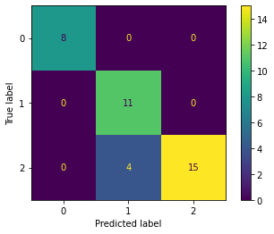

Afinación de parámetros de modelos en sklearn¶
13:55 min | Ultima modificación: Abril 13, 2021 | YouTube
Este tutorial demuestra como obtener la mejor combinación de hiperparámetros posibles de un modelo usando cross-validation.
Carga de datos¶
[1]:
#
# Carga de datos del dataset del iris
#
from sklearn import datasets
data = datasets.load_iris()
#
# Carga de datos.
# Se verifica la cantidad de datos de la muestra
#
X, y = data.data, data.target
print(X.shape, y.shape)
(150, 4) (150,)
Partición de los datos¶
[2]:
from sklearn.model_selection import train_test_split
X_train, X_test, y_train, y_test = train_test_split(
X,
y,
test_size=0.25,
random_state=33,
)
Preprocesamiento¶
[3]:
from sklearn.preprocessing import StandardScaler
scaler = StandardScaler()
scaler.fit(X_train)
X_train = scaler.transform(X_train)
X_test = scaler.transform(X_test)
Creación de la malla de datos¶
[4]:
from sklearn.linear_model import SGDClassifier
from sklearn.model_selection import GridSearchCV
#
# La variable tuned_parameters es una lista de diccionarios
# que contiene los valores que pueden ajustarse
#
parameters = [
{
"penalty": ["none"],
},
{
"penalty": ["l2"],
"alpha": [0.00001, 0.00002, 0.00003],
},
{
"penalty": ["l1"],
"alpha": [
0.00001,
0.00002,
0.00003,
],
"l1_ratio": [
0.10,
0.15,
0.20,
],
},
]
#
# Construye la malla de hiperparámetros
#
clf = GridSearchCV(
SGDClassifier(),
parameters,
cv=5,
)
#
# Entrenamiento de todos los modelos y selección
# de la combinación óptima de parámetros
#
clf.fit(X_train, y_train)
[4]:
GridSearchCV(cv=5, error_score=nan,
estimator=SGDClassifier(alpha=0.0001, average=False,
class_weight=None, early_stopping=False,
epsilon=0.1, eta0=0.0, fit_intercept=True,
l1_ratio=0.15, learning_rate='optimal',
loss='hinge', max_iter=1000,
n_iter_no_change=5, n_jobs=None,
penalty='l2', power_t=0.5,
random_state=None, shuffle=True, tol=0.001,
validation_fraction=0.1, verbose=0,
warm_start=False),
iid='deprecated', n_jobs=None,
param_grid=[{'penalty': ['none']},
{'alpha': [1e-05, 2e-05, 3e-05], 'penalty': ['l2']},
{'alpha': [1e-05, 2e-05, 3e-05],
'l1_ratio': [0.1, 0.15, 0.2], 'penalty': ['l1']}],
pre_dispatch='2*n_jobs', refit=True, return_train_score=False,
scoring=None, verbose=0)
[5]:
#
# Combinaciones usadas de hiperparámetros
#
clf.cv_results_
[5]:
{'mean_fit_time': array([0.0018321 , 0.00170088, 0.00162401, 0.0016674 , 0.00169454,
0.00172825, 0.00167127, 0.0021934 , 0.0017415 , 0.00169277,
0.00167446, 0.00170364, 0.00171952]),
'std_fit_time': array([1.65729047e-04, 1.03737017e-04, 1.48077709e-05, 4.35040677e-05,
4.63601479e-05, 6.73538858e-05, 5.07237754e-05, 6.63819245e-04,
6.01385239e-05, 5.61071410e-05, 3.95434015e-05, 4.15509891e-05,
9.21261730e-05]),
'mean_score_time': array([0.00028291, 0.00024338, 0.00024557, 0.00025244, 0.000245 ,
0.00024853, 0.00025454, 0.00032063, 0.00023899, 0.00023942,
0.0002573 , 0.00024095, 0.0002521 ]),
'std_score_time': array([6.53669832e-05, 1.26189889e-05, 2.32425712e-05, 2.88860221e-05,
2.48507655e-05, 2.32130088e-05, 2.30009559e-05, 8.86982997e-05,
2.32095803e-05, 2.44284937e-05, 2.69315499e-05, 1.89722474e-05,
2.74347587e-05]),
'param_penalty': masked_array(data=['none', 'l2', 'l2', 'l2', 'l1', 'l1', 'l1', 'l1', 'l1',
'l1', 'l1', 'l1', 'l1'],
mask=[False, False, False, False, False, False, False, False,
False, False, False, False, False],
fill_value='?',
dtype=object),
'param_alpha': masked_array(data=[--, 1e-05, 2e-05, 3e-05, 1e-05, 1e-05, 1e-05, 2e-05,
2e-05, 2e-05, 3e-05, 3e-05, 3e-05],
mask=[ True, False, False, False, False, False, False, False,
False, False, False, False, False],
fill_value='?',
dtype=object),
'param_l1_ratio': masked_array(data=[--, --, --, --, 0.1, 0.15, 0.2, 0.1, 0.15, 0.2, 0.1,
0.15, 0.2],
mask=[ True, True, True, True, False, False, False, False,
False, False, False, False, False],
fill_value='?',
dtype=object),
'params': [{'penalty': 'none'},
{'alpha': 1e-05, 'penalty': 'l2'},
{'alpha': 2e-05, 'penalty': 'l2'},
{'alpha': 3e-05, 'penalty': 'l2'},
{'alpha': 1e-05, 'l1_ratio': 0.1, 'penalty': 'l1'},
{'alpha': 1e-05, 'l1_ratio': 0.15, 'penalty': 'l1'},
{'alpha': 1e-05, 'l1_ratio': 0.2, 'penalty': 'l1'},
{'alpha': 2e-05, 'l1_ratio': 0.1, 'penalty': 'l1'},
{'alpha': 2e-05, 'l1_ratio': 0.15, 'penalty': 'l1'},
{'alpha': 2e-05, 'l1_ratio': 0.2, 'penalty': 'l1'},
{'alpha': 3e-05, 'l1_ratio': 0.1, 'penalty': 'l1'},
{'alpha': 3e-05, 'l1_ratio': 0.15, 'penalty': 'l1'},
{'alpha': 3e-05, 'l1_ratio': 0.2, 'penalty': 'l1'}],
'split0_test_score': array([0.91304348, 0.91304348, 0.82608696, 0.7826087 , 0.86956522,
0.86956522, 0.7826087 , 0.91304348, 0.82608696, 0.82608696,
0.82608696, 0.82608696, 0.86956522]),
'split1_test_score': array([0.95652174, 0.91304348, 0.86956522, 0.86956522, 0.7826087 ,
0.73913043, 0.91304348, 0.82608696, 0.95652174, 0.95652174,
0.91304348, 0.95652174, 0.91304348]),
'split2_test_score': array([1. , 0.90909091, 1. , 1. , 0.95454545,
1. , 1. , 1. , 1. , 0.90909091,
0.86363636, 0.95454545, 1. ]),
'split3_test_score': array([0.86363636, 0.86363636, 0.90909091, 0.90909091, 0.95454545,
0.63636364, 0.95454545, 0.90909091, 0.86363636, 0.90909091,
0.86363636, 0.86363636, 0.86363636]),
'split4_test_score': array([0.95454545, 0.86363636, 0.81818182, 0.81818182, 0.81818182,
0.95454545, 0.90909091, 0.95454545, 0.81818182, 0.95454545,
0.77272727, 0.68181818, 1. ]),
'mean_test_score': array([0.93754941, 0.89249012, 0.88458498, 0.87588933, 0.87588933,
0.83992095, 0.91185771, 0.92055336, 0.89288538, 0.91106719,
0.84782609, 0.85652174, 0.92924901]),
'std_test_score': array([0.04607075, 0.02360316, 0.06629956, 0.07560057, 0.06992138,
0.13508306, 0.07253368, 0.05758284, 0.07269289, 0.04729889,
0.04661686, 0.10110082, 0.06023487]),
'rank_test_score': array([ 1, 7, 8, 9, 10, 13, 4, 3, 6, 5, 12, 11, 2], dtype=int32)}
[6]:
#
# Mejor modelo
#
clf.best_estimator_
[6]:
SGDClassifier(alpha=0.0001, average=False, class_weight=None,
early_stopping=False, epsilon=0.1, eta0=0.0, fit_intercept=True,
l1_ratio=0.15, learning_rate='optimal', loss='hinge',
max_iter=1000, n_iter_no_change=5, n_jobs=None, penalty='none',
power_t=0.5, random_state=None, shuffle=True, tol=0.001,
validation_fraction=0.1, verbose=0, warm_start=False)
[7]:
#
# Coeficientes del mejor modelo
#
clf.best_estimator_.coef_
[7]:
array([[-18.66517354, 20.01738105, -17.2089447 , -14.52934805],
[ -5.0385267 , -5.6111228 , 24.11005925, -11.94619494],
[ -4.8744768 , -5.31106858, 39.20509965, 38.72057005]])
[8]:
#
# Interceptos del mejor modelo
#
clf.best_estimator_.intercept_
[8]:
array([-10.05881828, -0.47915639, -58.09332929])
Precisión del modelo¶
[9]:
from sklearn import metrics
#
# Pronóstico para el conjunto de entrenamiento
#
y_train_pred = clf.predict(X_train)
# Precisión para el conjunto de entrenamiento
metrics.accuracy_score(y_train, y_train_pred)
[9]:
0.9732142857142857
[10]:
# Precisión para el conjunto de prueba
y_pred = clf.predict(X_test)
metrics.accuracy_score(y_test, y_pred)
[10]:
0.8947368421052632
Reporte de clasificación¶
[11]:
#
# Métricas de evaluación
#
print(
metrics.classification_report(
y_test,
y_pred,
target_names=data.target_names,
)
)
precision recall f1-score support
setosa 1.00 1.00 1.00 8
versicolor 0.73 1.00 0.85 11
virginica 1.00 0.79 0.88 19
accuracy 0.89 38
macro avg 0.91 0.93 0.91 38
weighted avg 0.92 0.89 0.90 38
Matriz de confusión¶
[12]:
metrics.confusion_matrix(y_test, y_pred)
#
# Note que en el ejemplo del tutorial anterior.
#
# array([[ 8, 0, 0],
# [ 5, 1, 5],
# [ 0, 0, 19]])
#
[12]:
array([[ 8, 0, 0],
[ 0, 11, 0],
[ 0, 4, 15]])
[13]:
from sklearn.metrics import plot_confusion_matrix
#
# Note que la función computa internamente
# el pronósitco del clasificador
#
plot_confusion_matrix(
clf, # clasificador entrenado
X_test, # matriz de variables de entrada
y_test, # valor real
)
[13]:
<sklearn.metrics._plot.confusion_matrix.ConfusionMatrixDisplay at 0x7f284864ef28>
